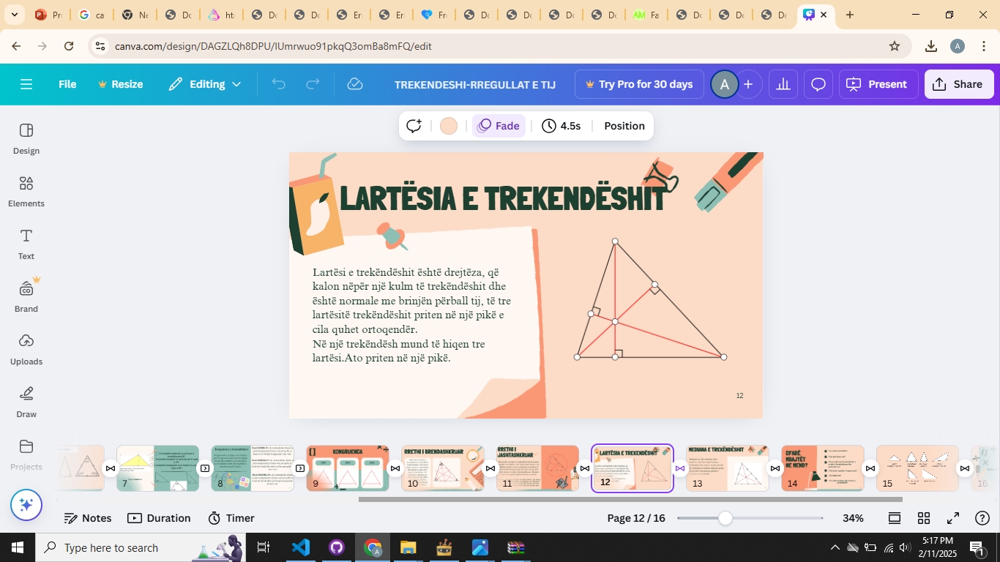
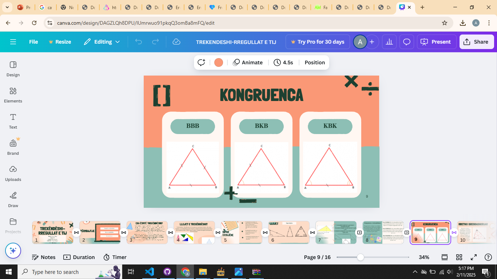
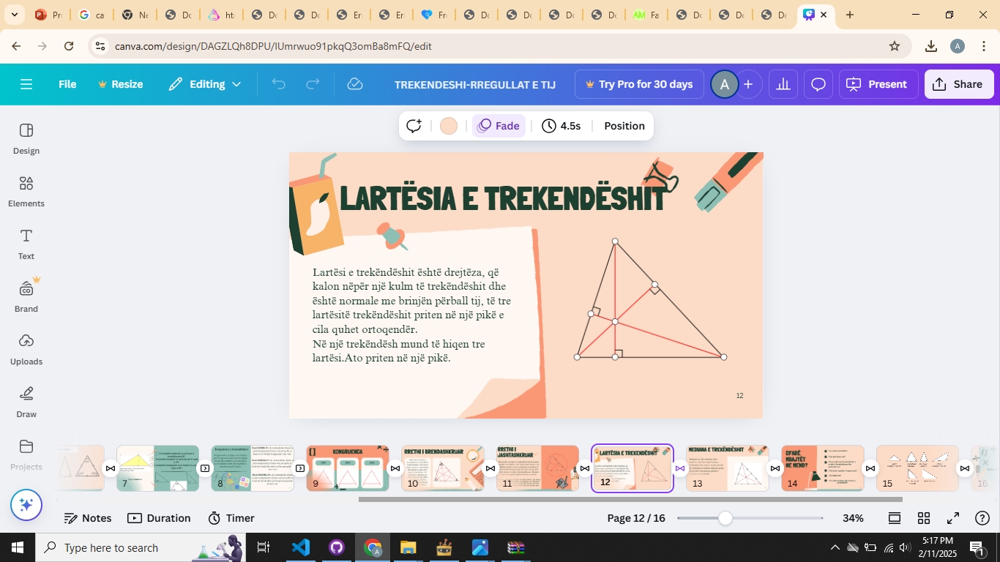
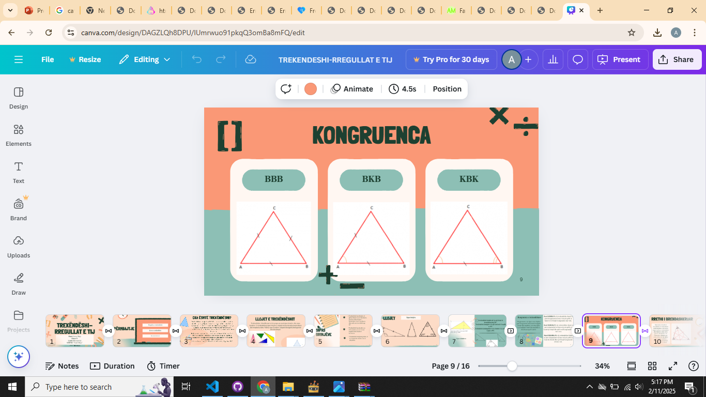
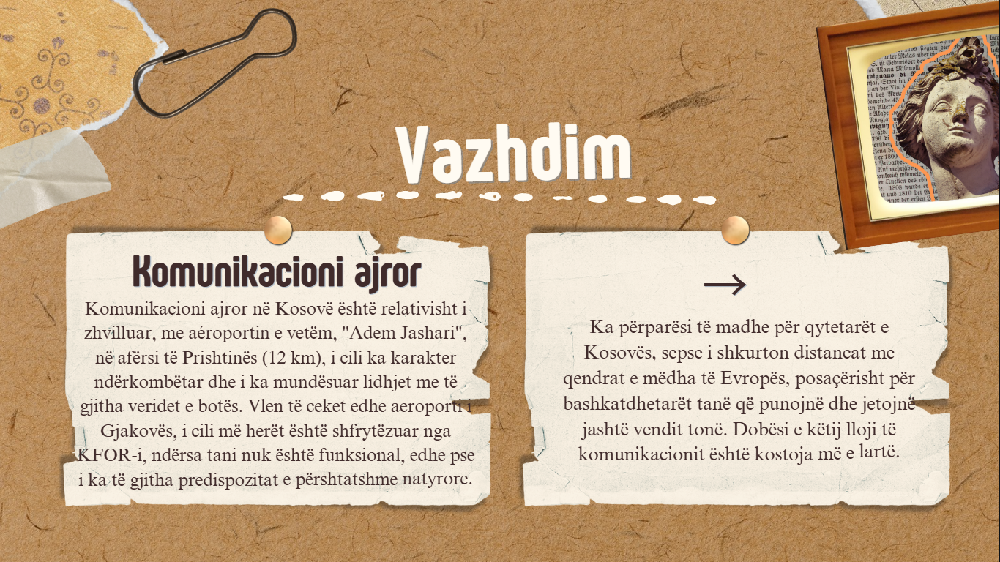
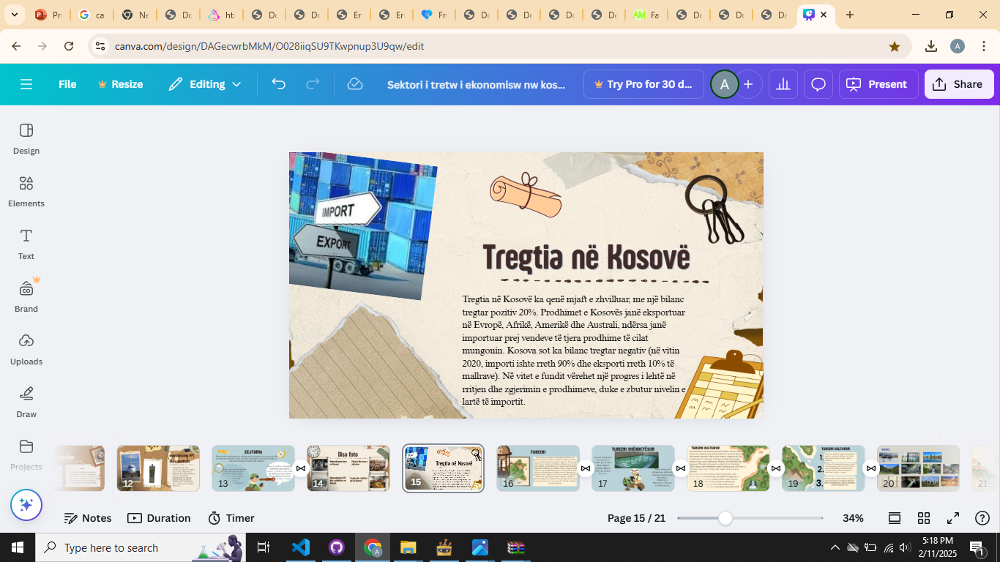
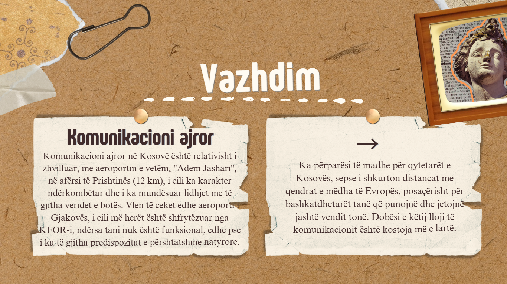
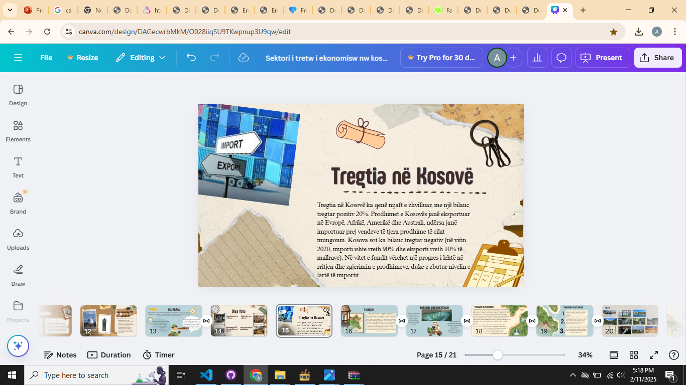

Math Project
This project
is for the subject of mathematics, in which I have discussed the
triangle,
its main types
and
classifications, the congruence of triangles , and more.
The project was created using the
"Canva" program,
and I have presented it here with some images.
I hope you like it!
 



Geography Project
This project is for the subject of geography, in which
I have discussed the tertiary sector
of
the
economy in
Kosovo.
I have written about the types of transportation, their impact, development, etc.
Additionally, I
have included some photos of the project,
which you can see here.

 



Chemistry Project
This project is for the subject of chemistry, in which
I have discussed the impact of alcohol on
daily
life.
I have included key topics such as its effects on the nervous system,
other parts of the body,
the
economy,
social relationships, family,
and many other damages, illustrated with some images.
The purpose of this
project is to raise awareness among our people!